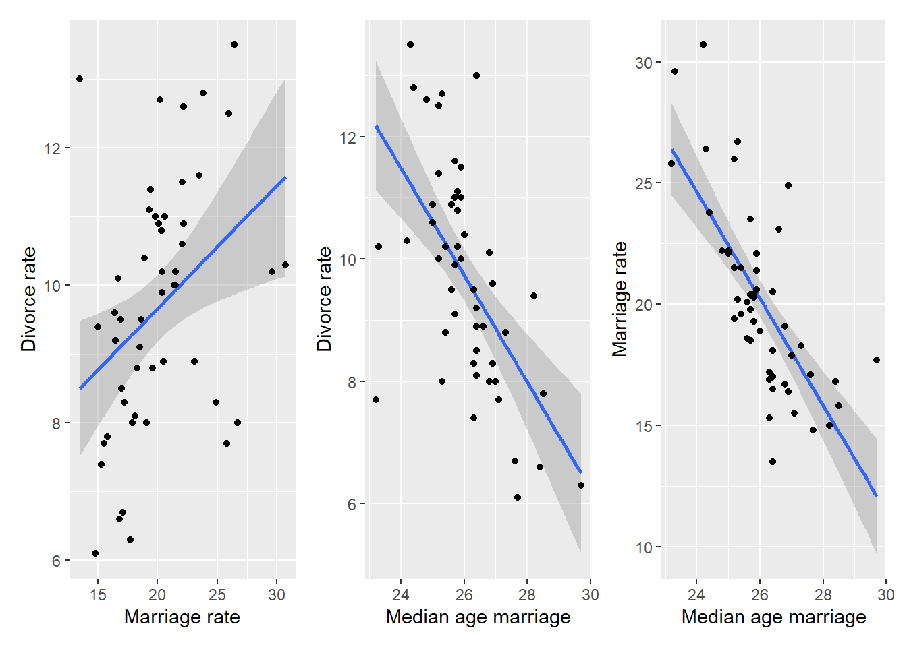
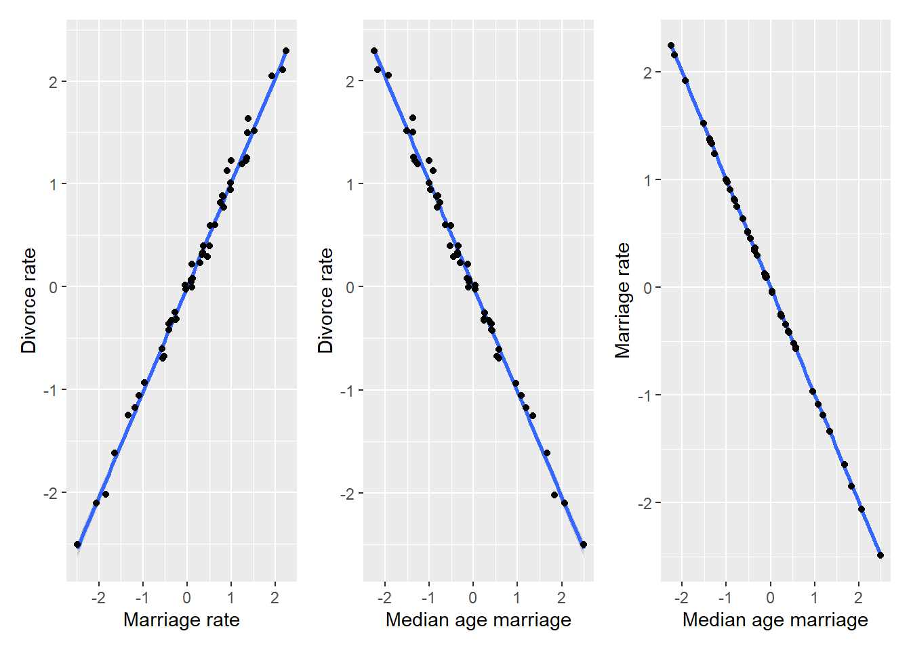
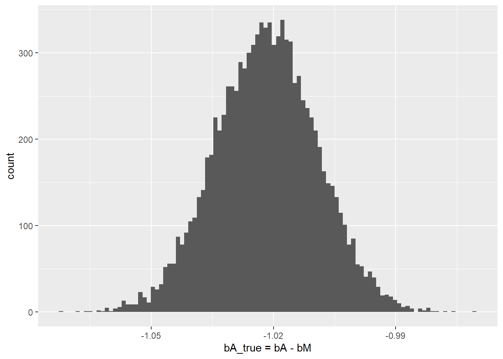
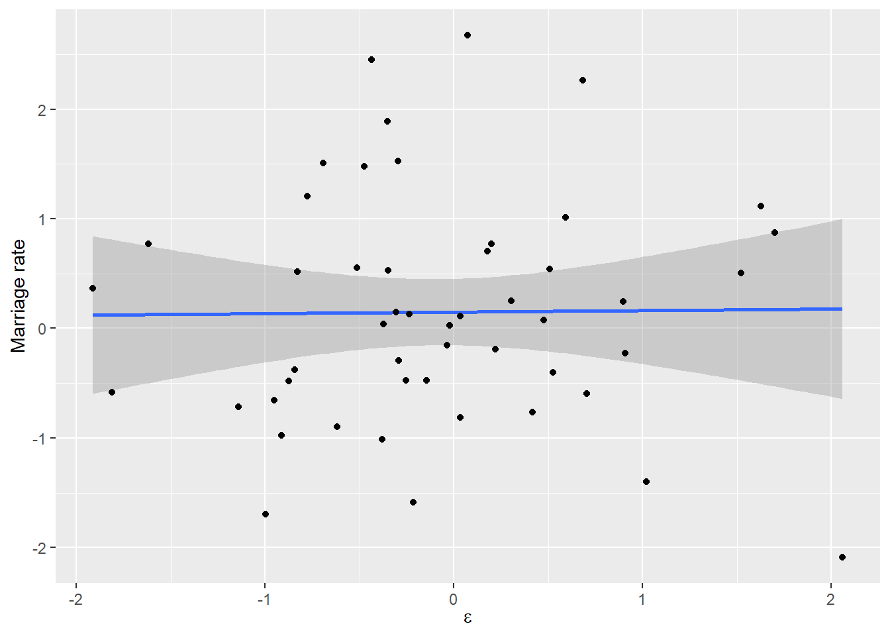
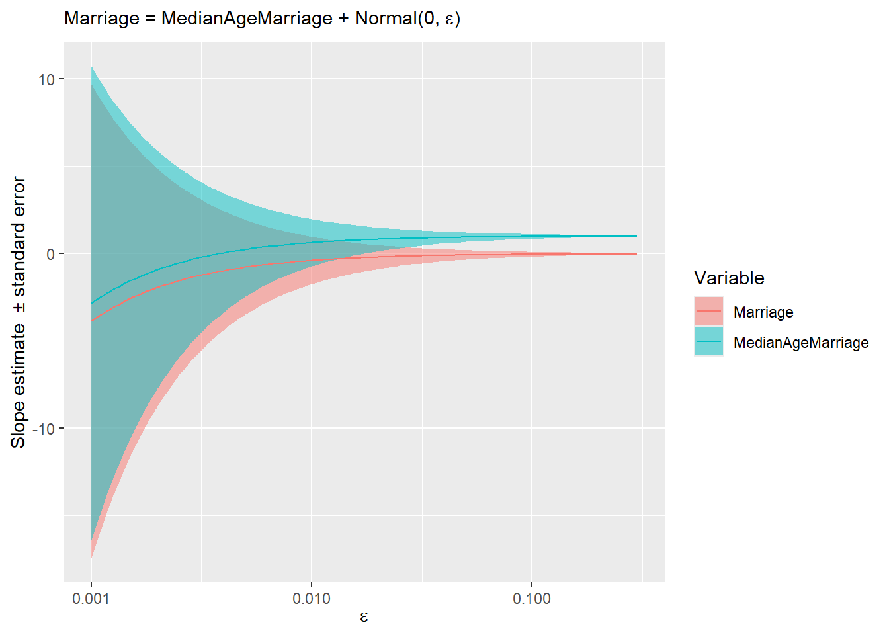
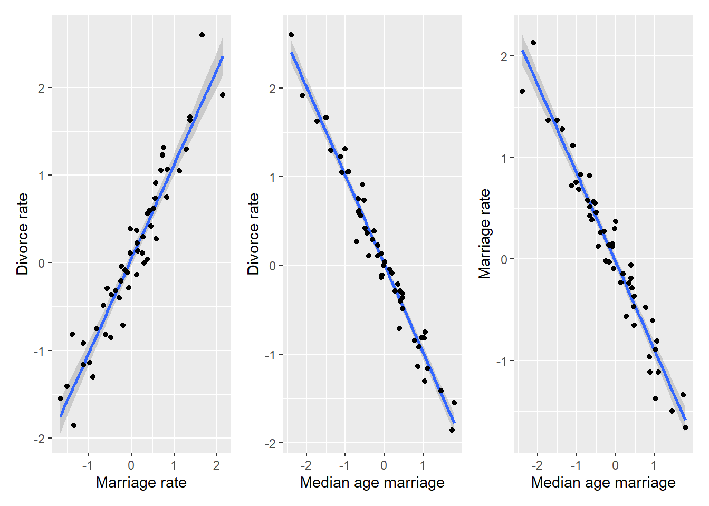

1 Spurious Associations
These notes are on Chapter 5 “The Many Variables & The Spurious Waffles”, specifically, on section 5.1 “Spurious association”. If you are to remember one thing from that chapter, it should be “doing multiple regression is easy, understanding and interpreting it is hard”. As you will see below, fully understanding relationship between variables is complicate even when we are working with a minimal multiple regression with just two predictors.
When reading section 5.1 “Spurious association”, I found relationships between the marriage age, marriage rate, and divorce rate to be both clear and mysterious. On the one hand, everything is correlated with everything.
On the other hand, once we fit linear model to predict divorce rate based on both median age marriage and marriage rate, the latter is clearly irrelevant (output of code 5.11 shows that its coefficient is effectively zero, meaning that it is ignored) and, therefore, it has no causal influence on divorce rate.
If you are like me1, you said “Huh! But how does the model know that?”. And, at least for me, explanations in the chapter did not help much. The key figure is 5.4, that shows that (omitting intercept and slope symbols) median age marriage = marriage rate + *extra information* + noise but marriage rate = median age marriage + noise. In a nutshell, both variables code the same information but marriage rate is a noisier version of it, so it is ignored. Unfortunately, the answer “but how?” still stands. The figure 5.4, which shows fits on residuals is illustrative, but we do not fit residuals, we fit both variables at the same time without fitting them on each other! Nowhere in the model 5.1.4 do we find \[\mu^{M}_{i} = \alpha_{AM} + \beta_{AM} * A_i\]
So, what’s going on? How does it know? To understand this, let us start with an issue of multicollinearity.
1.1 Multicollinearity
To make things easier to understand, let us use simulated data. Imagine that both marriage and divorce rate are both caused by marriage age and are almost perfectly linearly dependent it, so that \(D_i = \beta_A^{true} \cdot A_i\) (for the sake of simplicity \(\beta_A^{true} = -1\)) and \(M_i = -A_i\). The causal relationship that we are modeling is called a fork: \[Marriage~rate~\leftarrow~Age~of~marriage~\rightarrow~Divorce~rate\] We pretend our variables are already standardized, so the plots would look something like this.
data("WaffleDivorce")
set.seed(1212)
N <- nrow(WaffleDivorce)
sim_waffles <- tibble(MedianAgeMarriage = rnorm(N),
Divorce = -MedianAgeMarriage + rnorm(N, 0, 0.1),
Marriage = -MedianAgeMarriage + rnorm(N, 0, 0.01))
MD_plot <-
ggplot(data=sim_waffles, aes(x=Marriage, y=Divorce)) +
geom_smooth(method="lm", formula=y~x) +
geom_point() +
xlab("Marriage rate") +
ylab("Divorce rate")
AD_plot <-
ggplot(data=sim_waffles, aes(x=MedianAgeMarriage, y=Divorce)) +
geom_smooth(method="lm", formula=y~x) +
geom_point() +
xlab("Median age marriage") +
ylab("Divorce rate")
AM_plot <-
ggplot(data=sim_waffles, aes(x=MedianAgeMarriage, y=Marriage)) +
geom_smooth(method="lm", formula=y~x) +
geom_point() +
xlab("Median age marriage") +
ylab("Marriage rate")
MD_plot | AD_plot | AM_plot
The relationship is the same as in the plots above but, as we assumed an almost perfect correlation, there is not much spread around the regression line. Still, by definition of how we constructed the data, both marriage and divorce rate are caused (computed from) median age and, importantly, marriage rate is never used to compute the divorce rate. What happens if we analyze this simulated data using the same model 5.1.3, will it be able to figure “marriage rate does not matter” again?
sim_waffles <-
sim_waffles |>
mutate(A = MedianAgeMarriage,
M = Marriage,
D = Divorce)
sim_waffles_fit <- quap(
alist(
D ~ dnorm(mu , sigma) ,
mu <- a + bM*M + bA*A,
a ~ dnorm(0, 0.2),
bA ~ dnorm(0, 10),
bM ~ dnorm(0, 10),
sigma ~ dexp(1)
),
data = sim_waffles,
)
precis(sim_waffles_fit) mean sd 5.5% 94.5%
a -0.002044754 0.012914819 -0.02268513 0.01859562
bA 0.226160659 1.185655773 -1.66874626 2.12106758
bM 1.247790261 1.187297332 -0.64974019 3.14532071
sigma 0.090132278 0.008997328 0.07575281 0.10451175Oh no, we broke it! \(\beta_M\) is now about 1.25 rather than zero and \(\beta_A\) is around 0.27 rather than -1, as it should. Also note the uncertainty associated with both values, as they both overlap heavily with zero2. So, the data generation process is the same (Divorce rate ← Age → Marriage rate) and the model is the same (changes to priors have no particular impact in this case) but the “magic” of inferring the lack an “causal arrow” Divorce rate → Marriage rate is gone! The only difference between the two data sets is extra variance (noise) in marriage rate variable, so let us see how the absence of that extra noise in simulated data breaks the magic.
When two variables, marriage age and rate in our case, are (almost) perfectly correlated (\(M = -A\)), that means that you can substitute one for another. Thus, we can rewrite3 \[D = \beta_A \cdot A + \beta_M \cdot M \\ D = \beta_A \cdot A + \beta_M \cdot (-A) \\ D = (\beta_A - \beta_M) \cdot A \\ D = \beta_A^{true} \cdot A\] where \[ \beta_A^{true} = (\beta_A - \beta_M)\]
That last bit is the curse of multicollinearity, because if two variable have the same information, you are, effectively, fitting their sum! This is equivalent to fitting the sum4 of coefficients times one of the variables and does not matter which one, since they are identical. We used A because we know that it causes M. If you look at the precis output above, you will see that we did fit the \(\beta_A^{true}\)! Since bA = 0.27 and bM = 1.25, so plugging them in gives us \[\beta_A^{true} = \beta_A - \beta_M = 0.27 - 1.25 = -0.98\]
Hey, that is the slope that we used to construct divorce rate, so fitting does work! Moreover, we can see that there is very little uncertainty about \(\beta_A^{true}\)
posterior_samples <-
rethinking::extract.samples(sim_waffles_fit) |>
mutate(bA_true = bA - bM)
ggplot(posterior_samples, aes(x=bA_true)) +
geom_histogram(bins=100) +
xlab("bA_true = bA - bM")
But what about uncertainty for individual slopes? It stems directly from the fact that \(\beta_A^{true} = \beta_A - \beta_M = -1\) (it is -1 in our case, of course). There are infinite number of pairs of numbers whose difference would give -1: \(1-2\), \(2-3\), \((-200)-(-199)\), \(999.41-1000.41\), etc. All of them add up (subtract to) -1, so the fitting procedure cannot settle on any specific region for each parameter and any specific pair of values. Any number will do, as long as the other one differs by one.
1.2 Back to spurious association
Above, you have learned that if two variable have the same information, you can only fit both of them but cannot get individual slopes. But wasn’t that the case for real data we started with? Marriage age and rate are correlated, so why fitting used one (age) and not their sum? The answer is extra noise in marriage rate. In the real data marriage rate is age plus some noise: \(M = -A + \epsilon\), where \(\epsilon\) is traditionally used to denote “some noise”. How does that extra noise change our linear model for divorce rate? \[D = \beta_A \cdot A + \beta_M \cdot M \\ D = \beta_A \cdot A + \beta_M (- A + \epsilon) \\ D = (\beta_A - \beta_M ) \cdot A + \beta_M \cdot \epsilon\]
By definition, \(\epsilon\) is pure noise and has zero predictive value with respect to divorce rate. Thus, if we would fit it alone, we would expect to get a slope near zero, that is “no significant relationship”.
set.seed(1231455)
sim_waffles <- tibble(MedianAgeMarriage = rnorm(N),
Divorce = -MedianAgeMarriage + rnorm(N, 0, 0.1),
Marriage = -MedianAgeMarriage + rnorm(N, 0, 0.01),
epsilon = rnorm(N, 0, 1))
ggplot(sim_waffles, aes(x=epsilon, y=Divorce)) +
geom_smooth(method="lm", formula=y~x) +
geom_point() +
xlab(expression(epsilon)) +
ylab("Marriage rate")
But we are not fitting it alone, as the coefficient \(\beta_M\) appears twice: \[D = (\beta_A - \beta_M) \cdot A + \beta_M \cdot \epsilon\] The latter part, \(\beta_M \cdot \epsilon\), pushes \(\beta_M\) towards zero slope, which is the best solution for pure noise, as you saw in the plot above. But the former part, \(\beta_A - \beta_M\) only needs to add up to \(\beta_A^{true}\), so however we fix \(\beta_M\), \(\beta_A\) can accommodate. Thus the closer \(\beta_M\) to zero, the closer is \(\beta_A\) to \(\beta_A^{true}\). And that’s how the magic works! If one variable is other variable plus noise, that plus noise induces extra penalty (extra residuals) and the only way to reduce residuals is to ignore the uncorrelated noise by setting the slope to zero. Therefore, you ignore the variable as well, because it is merely a noisy twin of a better variable. You can see how added noise “disambiguates” the causal relationship5.
simulate_waffles <- function(sigma_noise){
# generate same data but for noise in Marraige from Age relationship
set.seed(169084)
sim_df <- sim_waffles <- tibble(MedianAgeMarriage = rnorm(N),
Divorce = rnorm(N, MedianAgeMarriage, 0.1),
Marriage = -rnorm(N, MedianAgeMarriage, sigma_noise))
# fit data using OLS and pulling out two slope coefficients
# I am using Magritt pipe because modern pipe is incompatible with $
lm(Divorce ~ Marriage + MedianAgeMarriage, data=sim_df) %>%
summary() %>%
.$coefficients %>%
data.frame() %>%
rownames_to_column("Variable") %>%
slice(-1) %>%
mutate(LowerCI = Estimate - Std..Error,
UpperCI = Estimate + Std..Error) %>%
select(Variable, Estimate, LowerCI, UpperCI)
}
simulated_noise <-
tibble(epsilon =exp(seq(log(0.001), log(0.3), length.out = 100))) |>
group_by(epsilon) |>
do(simulate_waffles(.$epsilon))
ggplot(simulated_noise, aes(x=epsilon, y=Estimate)) +
geom_ribbon(aes(ymin=LowerCI, ymax=UpperCI, fill=Variable), alpha= 0.5) +
geom_line(aes(color=Variable)) +
scale_x_log10(name=expression(epsilon)) +
ylab("Slope estimate ± standard error") +
labs(subtitle = expression(paste("Marriage = MedianAgeMarriage + Normal(0, ", epsilon, ")")))
The stripes show uncertainty (estimate ± standard error) and you can appreciate how quickly it is reduced as marriage rate becomes noisier and just how little noise is required for “magic” to start working and converge on the true causal relationship6.
1.3 Chain DAG
So, a bit of noise will fix everything and we can know causal relationships between the three variables? Not necessarily! Consider another possible causal diagram: \[Marriage~rate~\rightarrow~Age~of~marriage~\rightarrow~Divorce~rate\] Now marriage rate causes age of marriage that, in turn, causes divorce rate. Again, let us use synthetic data, so that we can be sure what causes what. However, we will add a fair amount of noise to make it more like real data and avoid multicoliniarity.
data("WaffleDivorce")
set.seed(8973791)
N <- nrow(WaffleDivorce)
sim_waffles <- tibble(Marriage = rnorm(N),
MedianAgeMarriage = -rnorm(N, Marriage, 0.2),
Divorce = -rnorm(N, MedianAgeMarriage, 0.2))
MD_plot <-
ggplot(data=sim_waffles, aes(x=Marriage, y=Divorce)) +
geom_smooth(method="lm", formula=y~x) +
geom_point() +
xlab("Marriage rate") +
ylab("Divorce rate")
AD_plot <-
ggplot(data=sim_waffles, aes(x=MedianAgeMarriage, y=Divorce)) +
geom_smooth(method="lm", formula=y~x) +
geom_point() +
xlab("Median age marriage") +
ylab("Divorce rate")
AM_plot <-
ggplot(data=sim_waffles, aes(x=MedianAgeMarriage, y=Marriage)) +
geom_smooth(method="lm", formula=y~x) +
geom_point() +
xlab("Median age marriage") +
ylab("Marriage rate")
MD_plot | AD_plot | AM_plot
The plots look very similar to those that we had before, so let us run the model.
sim_waffles <-
sim_waffles |>
mutate(A = MedianAgeMarriage,
M = Marriage,
D = Divorce)
sim_waffles_fit <- quap(
alist(
D ~ dnorm(mu , sigma) ,
mu <- a + bM*M + bA*A,
a ~ dnorm(0, 0.2),
bA ~ dnorm(0, 10),
bM ~ dnorm(0, 10),
sigma ~ dexp(1)
),
data = sim_waffles,
)
precis(sim_waffles_fit) mean sd 5.5% 94.5%
a 0.01141493 0.02370058 -0.02646318 0.04929304
bA -1.04399582 0.11019913 -1.22011532 -0.86787631
bM -0.05011269 0.12299879 -0.24668851 0.14646313
sigma 0.16656407 0.01661272 0.14001374 0.19311440The model fit is virtually identical to that for the real data and, effectively, for a noisy simulated fork DAG. Yet, remember, that the underlying causal relationship between marriage rate and marriage age is now opposite. In the fork DAG, age was causing marriage rate. Here, in the chain DAG, marriage rate for causing age. Moreover, the way we generated synthetic data, marriage rate causes divorce rate, although its effect is mediated via marriage age. Yet, looking at the parameter values for \(\beta_M\) we might be tempted to conclude that marriage rate has no effect on divorce rate. To understand why, think about the relationship between marriage rate and age again. We designed it, so that \(A = -M + \epsilon\) and \(D = -A\) (we ignore the noise in the latter part for clarity). Substituting, we get \(D = M - \epsilon\) or, since we designed noise to be symmetric, we can also write \(D = M + \epsilon\). To put it differently, divorce rate are based on actual values of age, which include noise. So, somewhat paradoxically, the cleaner version of the original variable is less correlated. If it still unclear, let me try with a metaphor. Imagine your friend sings you a song she heard. \(original \rightarrow friend \rightarrow you\). She remembered it wrong, so her version is somewhat different from the original. But because you are used to her version of the song, the original, once you finally hear it, sounds wrong, as it does not have the distortions introduced by your friend.
1.4 Take-home messages
So, two DAGs, two differently generated data sets, yet, one statistical model. Both DAGs agree that there is a direct causal path between marriage age and divorce but have opposite assumptions about causal relationship between marriage age and rate. What should we conclude from this? That it might be impossible to understand causal relationships between all variables even for the simplest case of just two predictors. The only thing to do is to embrace this ambiguity and be aware of it whenever you interpret regression models. So, you should use DAGs exactly for this purpose of understanding in how many ways can you generate the observed data. I understand that a simple unambiguous story is far more appealing7 but as Jochen Braun of Magdeburg says: “Do not fall for your own propaganda!”. Selecting just one story / DAG does not make them true. Considering all possible DAGs will likely lead to insights based on predictions they make. Even if your current data cannot decide between them, their different predictions for future experiments will help to solve the puzzle eventually.
Another take home message: Regression models cannot do magic. They can quantify correctional relationship and their signal-to-noise ratios but they do not know causality and they won’t tell you which model is the “true” model. Imagine that we never measured marriage age, we would model divorce rate from marriage rate and would be quite pleased with the results. And, given how noisy the real data is, we probably did not consider some other very important variables, those presence might render age as irrelevant as the marriage rate is now. Again, assuming the chain DAG \[marriage~rate \rightarrow age \rightarrow variable~we~missed \rightarrow divorce~rate\] Statistical models only work in a small world you created for them. Models are golems, they cannot and do not know about the large world. You do, so it is on you to understand both their limitations and power. Models can help you understand the process you are investigating but they won’t understand it for you!
Don’t be like me, be better!↩︎
I’ve made priors for both betas broad, so that they are not pushed towards zero too aggressively and uncertainty about them is more evident↩︎
I’ve dropped likelihood and variance only to compress formulas and shed unimportant details. Adding them does not change the essence.↩︎
in our case, the difference, because we defined that
M = -A.↩︎I’ve used ordinary least squares just to make simulations faster. You will get the same result using Bayesian fittings procedures.↩︎
It is true only in a sense that it matches the processes of creating the data. It is not necessarily truly true for real data!↩︎
“Just tell me how things are!”↩︎